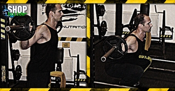

Ugrás a tartalomra
Ugrás a tartalomra
Testépítés
Guggolás
{kind=link}
Hatás
Ez a mozgás, egyike a legjobb gyakorlatoknak, mivel ez érinti a test fő izomcsoportjainak legtöbbjét. A guggolás megdolgoztatja a combizmokat, a csípő- és a farizmokat, a lábbicepszet és a hátizmok alsó részét. A hasi, a felső háti, a vádli- és a vállizmokat is igénybe veszi.
Kiinduló helyzet
Állj kiegyenesedve egy kétkezes súlyzó rúdját egyensúlyozva a nyakad mögött a hátadon keresztben, és a recézett rúdrészt a súlytárcsák közelében fogva. Tedd sarkaidat egymástól 30-50 cm-re úgy, hogy lábfejeid kissé kifelé mutassanak.
A mozgás
Szemeddel nézz egy pontra magad elé, szemmagasságnál kicsit feljebb, és tartsd tekintetedet azon a ponton az egész mozgás során. Ezután lassan hajlítsd be térdedet, és ereszd le tested teljes guggolásba. Tartsd a törzsedet kihúzva, a hátadat egyenesen, és fejedet felfelé (a szem egy ponton való rögzítése segíti ezt) az egész mozgás folyamán. Ha combjaid a padlóval való vízszintes helyzeten túlhaladtak már, akkor lassan emelkedj fel a kiinduló helyzetbe. Igyekezz a sarkadat mindig a padlón tartani.
Edzéstipp
Ha nem elég rugalmas a bokád, akkor nagyon nehéznek fogod találni a guggolás közbeni egyensúlyozást. Fokozni tudja az egyensúlyozás biztonságát, ha a sarkaddal egy 5x10 cm-es deszkára állsz.**
A guggolás edzésterv összeállítása során mindig tartsd szem előtt, hogy az egyik legmegterhelőbb gyakorlatról beszélünk. Tehát ne akarj más, hasonlóan megterhelő mozgásformát, vagy edzéstervet végezni egyazon edzésen, mint amikor guggolsz.
** - egyes szakértők szerint a sarokalátéttel guggolás káros, mások szerint viszont genetika kérdése, hogy valakinek elég rugalmasak-e a bokaszalagjai a telitalpas guggoláshoz vagy sem. Mindenesetre az igazi, széles terpeszes, mély guggolást NEM célszerű sarokalátéttel végezni, inkább időt kell áldozni rá, és fokozatos nyújtással hozzászoktatni még kis súlyok használata közben a bokaszalagokat a telitalpas guggoláshoz.